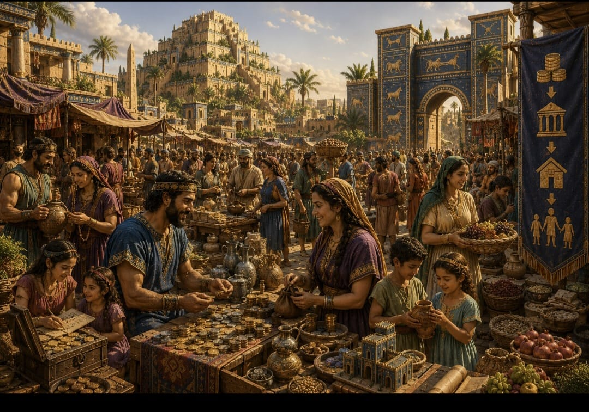

האיש העשיר ביותר בבבל
איך היו מתנהלים כלכלית בבבל, ומה אפשר ללמוד מזה היום?

הספר "האיש העשיר ביותר בבבל" מציג עקרונות זהב להתנהלות כלכלית נכונה דרך סיפורים ומשלים, ומראה עד כמה עקרונות בסיסיים של חיסכון, משמעת והשקעה נכונה רלוונטיים גם היום.
בבל הייתה סמל לעושר ולשגשוג, והספר מעביר את המסרים שלו דרך משלים קצרים, שלכל אחד מהם יש מסר ברור. במרכז הספר עומד ארקד, אדם שהצליח לצאת מעוני מחפיר ולהפוך לאיש העשיר ביותר בבבל.
אז הנה 7 העקרונות בקצרה
שלמו לעצמכם קודם
כל אדם צריך לשמור לעצמו חלק קבוע מההכנסה שלו, ולחסוך לפחות 10%.
שלטו בהוצאות שלכם
תקציב נועד לעזור לנו להבין מה באמת חשוב, ולנהל נכון את הכסף שלנו במקום שהוא ינהל אותנו.
תנו לכסף לעבוד בשבילכם
את הכסף שהצלחתם לחסוך כדאי להפנות ישר להשקעות, כדי שייצר עבורכם עוד כסף.
הגנו על הונכם מהפסד
תהיו בשליטה על מי מייעץ לכם. לא כל מי שנותן עצה באמת מבין, וחשוב מאוד לבדוק ממי מקבלים הכוונה ומה האינטרס שלו.
בנו הון דרך נכסים
הספר מדבר גם על האפשרות של רכישת נדל"ן והפיכת מקום המגורים לנכס כדרך לבנות יציבות והון אמיתי לאורך זמן.
הבטיחו הכנסה לעתידכם
אחד הדברים הקשים לראות זה אנשים בגיל פרישה עובדים בשביל להשלים הכנסה כי הקצבה הפנסיונית שלהם לא מספקת. מי שלא חושב על העתיד וחוסך לפנסיה כמו שצריך, עלול להגיע למצב הזה.
השקיעו בעצמכם
מי שמתפתח, לומד, ורוכש כישורים מגדיל לאורך זמן גם את היכולת שלו להרוויח יותר.
"האיש העשיר ביותר בבבל" הוא ספר פשוט, חכם ונגיש, שמתאים במיוחד לאנשים בתחילת דרכם שרוצים לקבל נקודת מבט על העולם הפיננסי בשפה קצת אחרת מהרגיל. אני כמובן ממליץ עליו בחום!
רוצים ליישם את עקרונות הזהב האלה?
ליווי אישי שיעזור לכם לבנות תוכנית פיננסית מסודרת, צעד אחר צעד
דברו איתי עכשיוהכתוב אינו מהווה ייעוץ השקעות ואינו תחליף לייעוץ אישי. שיתוף ידע ודעה בלבד.